Добавление Jekyll CMS на CloudCannon
В этом руководстве мы создаём сайт для вымышленного кафе под названием Coffee Cafe. В данном уроке мы добавляем на сайт CMS (content management system, система управления контентом) через CloudCannon. CloudCannon представляет собой систему управления контентом для Jekyll и статичных сайтов. Это позволяет вашей команде или клиентам обновлять содержимое сайта и сохранить преимущества статичного сайта.
Мы опубликуем сайт Coffee Cafe, определим редактируемые области и сделаем их доступными для не-разработчиков.
Настройка
Начните с регистрации бесплатного аккаунта на CloudCannon.
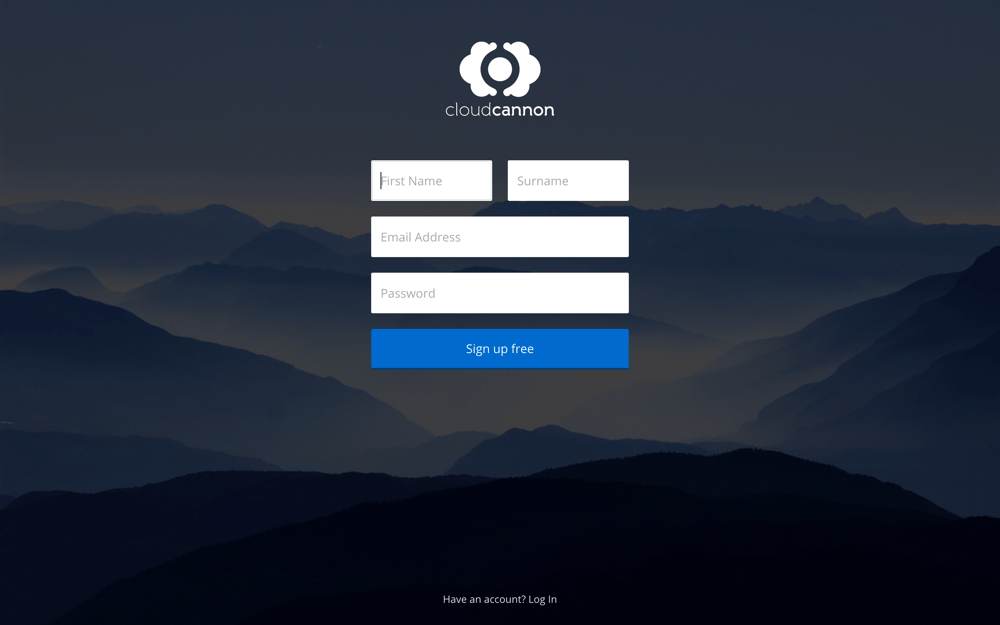
На первом экране вы видите админку, где создаёте и получаете доступ к сайтам на CloudCannon. Создайте сайт и назовите его Coffee Cafe.
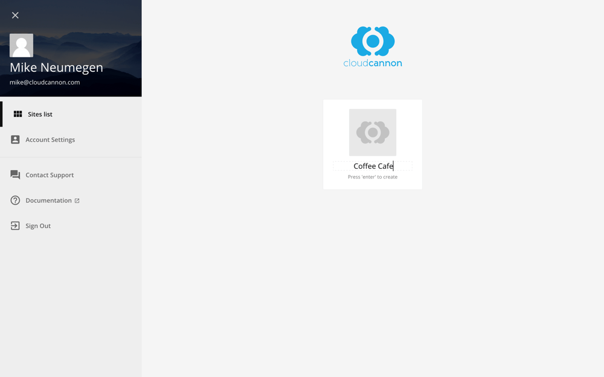
Для добавления файлов загрузите сайт, который мы создали на предыдущем уроке, путём перетаскивания исходных файлов в браузер. CloudCannon также поддерживает синхронизацию файлов с GitHub, Bitbucket и Dropbox.
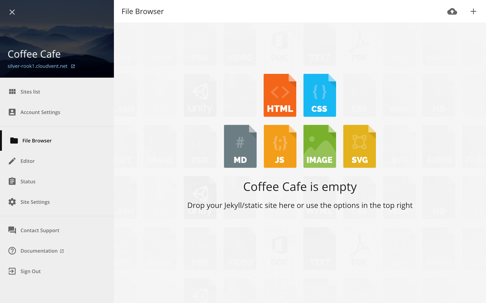
Для настройки сайта на Jekyll, а также чтобы сообщить CloudCannon использовать для нашего сайта Jekyll, нам нужен файл конфигурации. Создайте пустой файл из меню в правом верхнем углу и назовите его _config.yml.
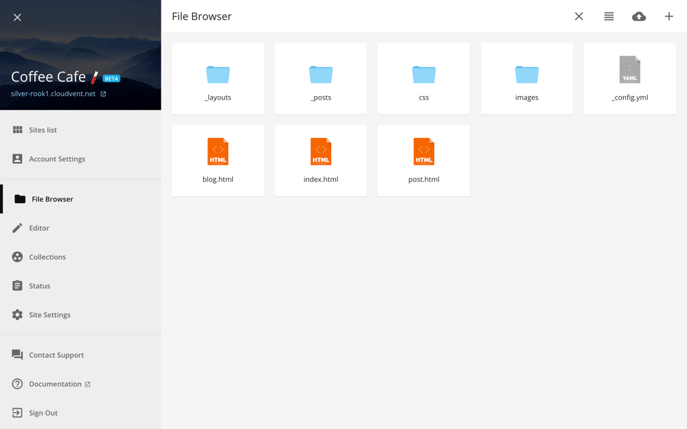
При изменении файла CloudCannon перестраивает сайт и сразу же размещает его по адресу *.cloudvent.net. Щёлкните по ссылке вверху, чтобы посмотреть реальный сайт Coffee Cafe.
Редактирование содержимого
Не-разработчики обновляют содержимое в CloudCannon через редактируемые области, заданные разработчиками. Редактируемые области представляют собой элементы HTML с классом editable. Чтобы добавить их, откройте редактор кода, щёлкнув по файлу index.html.
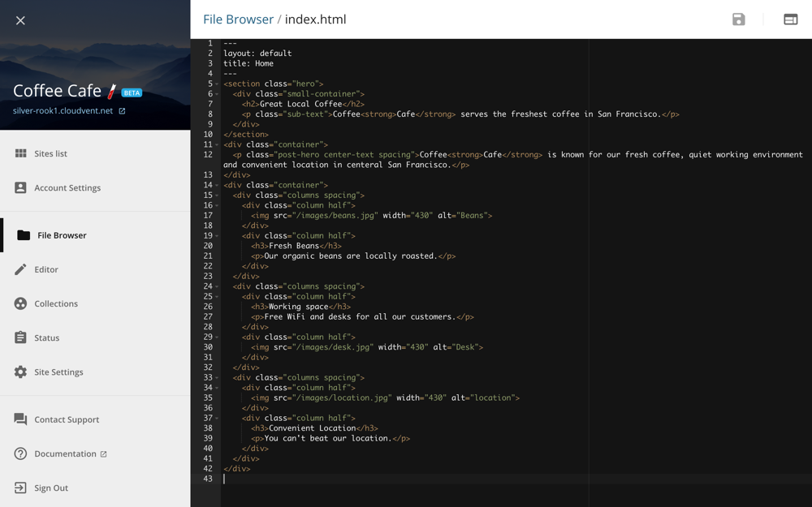
Добавьте класс editable к тем элементам HTML, которые будут обновлять не-разработчики. Данный пример делает весь <div> редактируемым:
HTML
<div class="column third editable">
<div class="center-text"><img src="//d1qmdf3vop2l07.cloudfront.net/grape-giraffe1.cloudvent.net/compressed/8a0c8c4e90d8ac7681629b333225fc86.svg" alt="search" width="100" data-cms-original-src="/images/search.svg" /></div>
<h3>Improve</h3>
<p>Our customers rank up to 20% higher on their targeted keywords</p>
</div>Этот пример ограничивает редактирование некоторыми элементами внутри <div>:
HTML
<div class="column third">
<div class="center-text"><img src="//d1qmdf3vop2l07.cloudfront.net/grape-giraffe1.cloudvent.net/compressed/8a0c8c4e90d8ac7681629b333225fc86.svg" alt="search" width="100" data-cms-original-src="/images/search.svg" /></div>
<h3 class="editable">Improve</h3>
<p class="editable">Our customers rank up to 20% higher on their targeted keywords</p>
</div>Сохраните изменения и откройте визуальный редактор в правом верхнем углу, чтобы увидеть редактируемые области в действии. В визуальном редакторе содержимое внутри жёлтой рамки может быть обновлено.
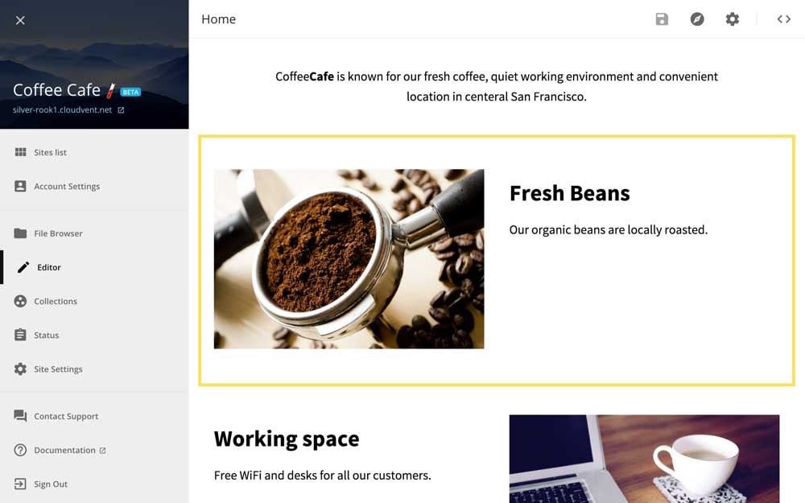
Совместное использование
Совместное использование сайта с другими сотрудниками позволяет им коллективно работать над содержимым. Перейдите в раздел , введите адрес электронной почты коллеги, установите уровень разрешений Non-Developer и нажмите кнопку Add Share.
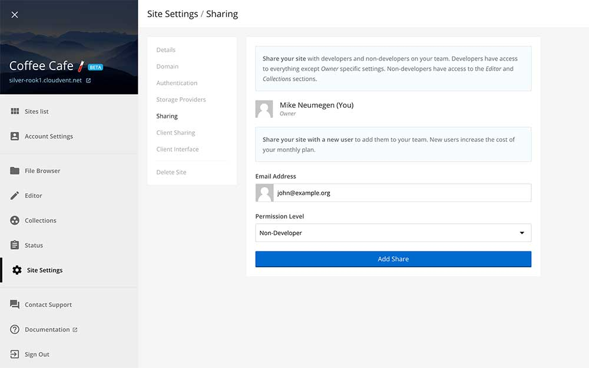
CloudCannon отправляет по электронной почте приглашение для редактирования сайта.
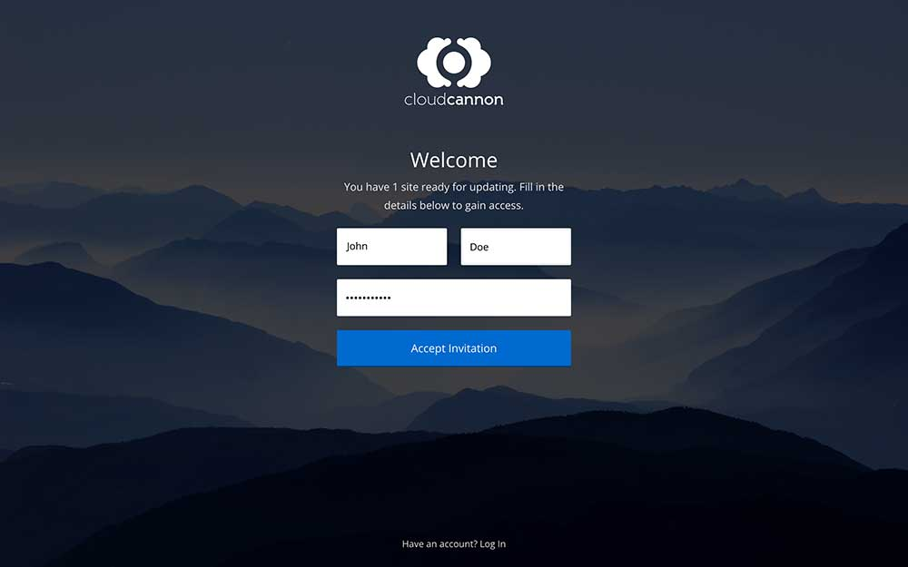
После этого не-разработчики входят в систему, открывают сайт Coffee Cafe в визуальном редакторе и обновляют редактируемые области.
Они могут обновить заголовок страницы и другие метаданные в панели настроек с помощью кнопки настроек в правом верхнем углу. Документация CloudCannon содержит подробные параметры для управления вступлением.
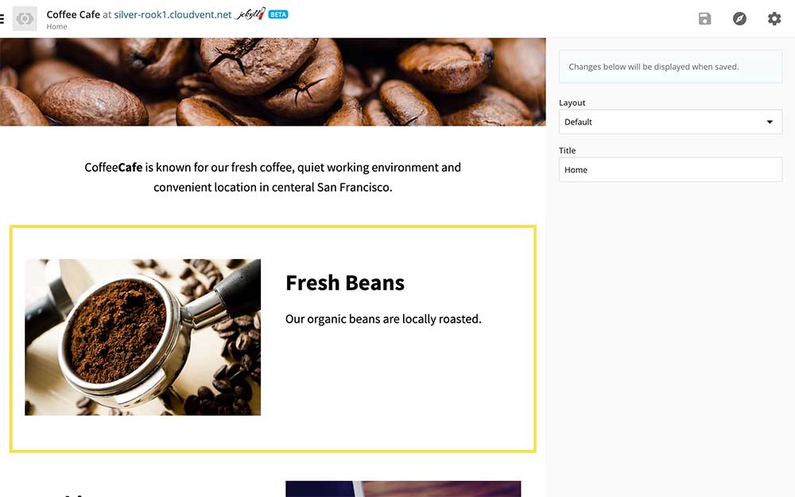
Ведение блога
Для ведения блога перейдите в в левой боковой панели.
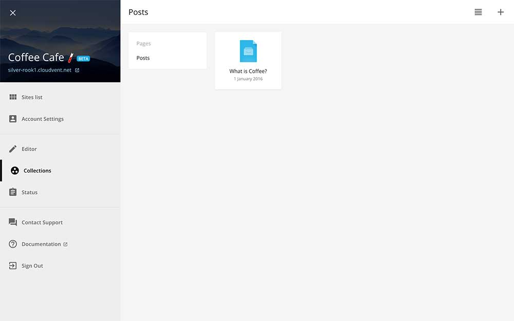
Чтобы создать новый черновик статьи, используйте меню в правом верхнем углу. Новые черновики и существующие статьи блога открываются в простом в освоении редакторе. Здесь же находятся настройки для сохранения изменений и публикации черновиков.
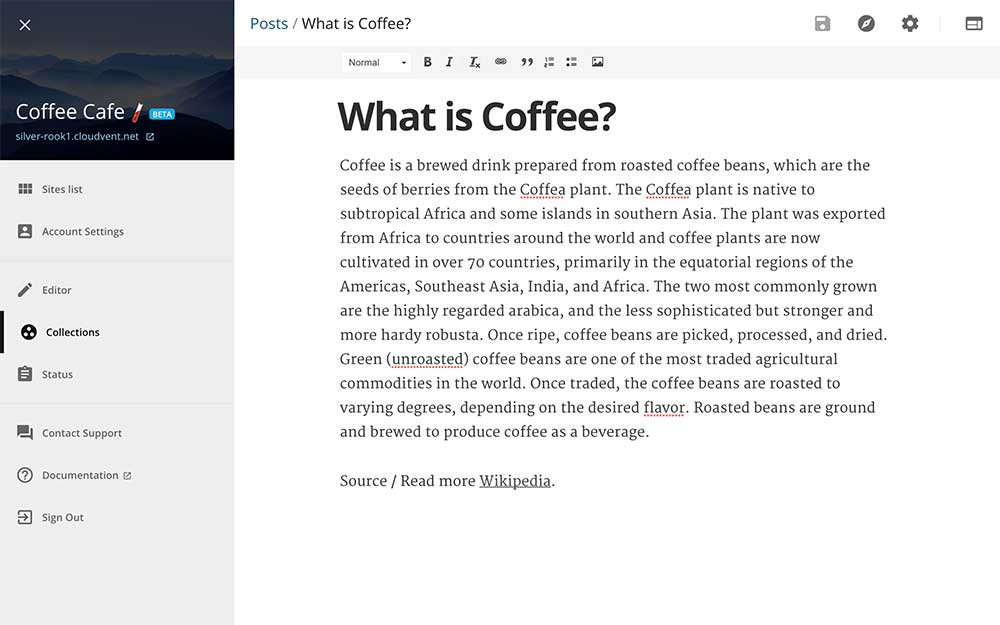
Статус
Подсказки, статус и история изменений, внесённых на сайт, доступны на странице Status.
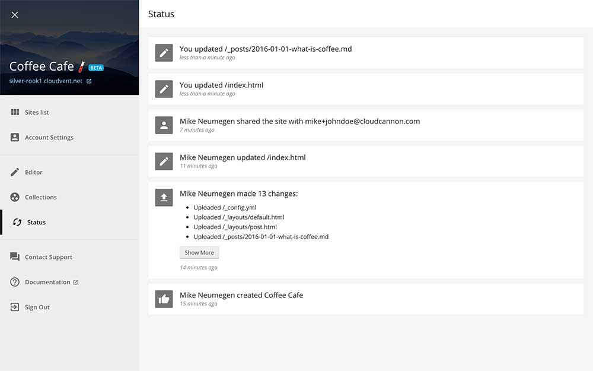
Рабочие процессы
Работа локально хороша для разработчиков, поскольку вы можете использовать существующие инструменты. Сохраните этот рабочий процесс путём синхронизации вашего сайта с GitHub или Bitbucket на CloudCannon и сделайте git push для публикации изменений. CloudCannon видит изменения, перестраивает сайт и публикует его в реальном времени. Когда не-разработчики обновляют содержимое в CloudCannon, изменения публикуются сразу же и фиксируются в хранилище.
У вас может быть несколько сред (например, разработка и публикация) с ветками Git. Настройте ветки Git для каждой среды и создайте сайт CloudCannon для каждой ветки. Затем изменения сливаются в готовый сайт, всё внутри CloudCannon.
Наш редактируемый сайт
Сайт Coffee Cafe в настоящее время живёт и редактируется на CloudCannon. Вымышленные сотрудники обновляют содержимое сами без какого-либо кода. Разработчики работают локально на своих любимых редактора кода и отправляют изменения на Git.